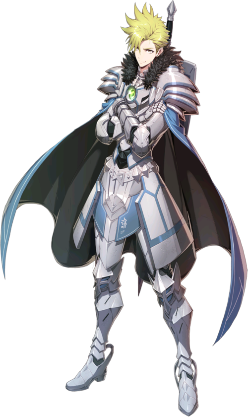

" Pas besoin d'hésiter.
On n'a qu'une vie, autant suivre ses convictions, non ?"
Un chevalier royal qui a vite monté les échelons parmis les gardes-frontières de Taranor.
Krau reste fidèle à la justice dans laquelle il croit et ne recule jamais.
Une fois que Krau a choisi une direction et qu'il est sûr quelle est la bonne,
il ne doute jamais de son choix ni ne le regrette,
peu importe la souffrance à laquelle il devra faire face.
Il peut paraître arrogant dû à son inébranlable confiance en soi,
mais il est assez puissant pour se le permettre.
Il a longtemps été le protecteur et garde personnel du roi de Taranor, Friedrich.
Krau reste fidèle à la justice dans laquelle il croit et ne recule jamais.
Une fois que Krau a choisi une direction et qu'il est sûr quelle est la bonne,
il ne doute jamais de son choix ni ne le regrette,
peu importe la souffrance à laquelle il devra faire face.
Il peut paraître arrogant dû à son inébranlable confiance en soi,
mais il est assez puissant pour se le permettre.
Il a longtemps été le protecteur et garde personnel du roi de Taranor, Friedrich.
Tempête d'épée
Attaque un ennemi avec une Tempête d'épées avec 50% de chances de provoquer pendant 1 tour. Les dégâts augmentent en fonction de la santé max du lanceur.
Charge
Pousse l'ennemi avec un bouclier, réduisant l'Ardeur au combat de 35% avant de conférer une augmentation de la Défense à tous les alliés pendant 2 tours. Les dégâts augmentent en fonction de la santé max du lanceur.
Invocation de Ziegfried
Attaque en invoquant le Gardien Ziegfried, infligeant des dégâts proportionnels à la santé perdue du lanceur et infiltrant la Défense. Confère une barrière au lanceur pendant 2 tours, dont la force est proportionnelle à la santé max du lanceur. Cette attaque ne peut pas provoquer de coup critique.Base stats
Awakened Stats
| Level | Stars | Cp | Attack | Hp | Def |
| 50 | 5 | 11948 | 553 | 4492 | 557 |
| 60 | 6 | 14899 | 689 | 5647 | 690 |
| Level | Stars | Cp | Attack | Hp | Def |
| 50 | 5 | 13617 | 673 | 5101 | 607 |
| 60 | 6 | 17231 | 839 | 6405 | 752 |